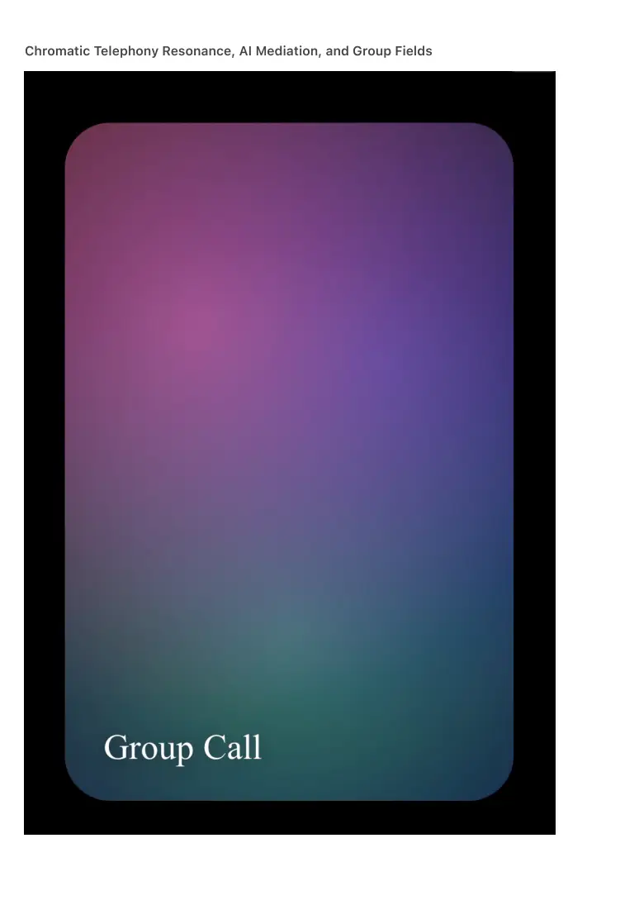

PDF page 1
Chromatic Telephony Resonance, AI Mediation, and Group Fields

PDF page 2
Ambient Era Canon · Telephony Volume II
Raynor Eissens
Zenodo Edition · 2026
⸻
Abstract (outline-level)
Telephony Volume II extends Chromatic Telephony (AC-1) beyond dyadic presence into resonant
fields, AI-mediated interpretation, and multi-agent group communication. Where AC-1
establishes chromatic presence as the primary carrier of telephonic meaning, Volume II
formalizes how such presence scales, blends, stabilizes, and persists across multiple
participants and temporal horizons.
This volume introduces Resonance Fields, AI as Field Mediator, and Group Presence
Topologies, defining telephony as a distributed ambient system rather than a channel between
endpoints.
⸻
1. From Presence to Resonance
1.1 Limits of Dyadic Telephony
• AC-1 defines presence between caller and receiver.
• Real communication environments involve overlap, simultaneity, and shared
context.
• Symbolic group calls collapse under coordination load and ΔR accumulation.
1.2 Definition of Resonance
• Resonance is the coherent alignment of multiple chromatic presence
states.
• Resonance precedes agreement, language, or explicit coordination.
• In chromatic systems, resonance is perceptually visible and
thermodynamically stabilizing.
⸻
2. Resonance Fields (RF)
2.1 The Resonance Field Concept
• A Resonance Field is a shared chromatic space generated by multiple
PDF page 3
presences.
• Individual CPFs no longer dominate; the field itself becomes the primary
signal.
2.2 Field Formation Rules
• Fields form when chromatic overlap exceeds a coherence threshold.
• Color blending follows AP₂ reasoning, not additive mixing.
• The field resolves toward lowest ΔR configuration.
2.3 Persistent vs Transient Fields
• Transient fields: momentary coordination (meetings, check-ins).
• Persistent fields: families, teams, communities, long-running projects.
⸻
3. Group Presence Topologies
3.1 Field Shapes
• Radial fields (one stabilizing center).
• Distributed fields (no central carrier).
• Layered fields (roles expressed chromatically).
3.2 Membership Without Lists
• No participant lists, invites, or permissions.
• Entry occurs by chromatic resonance, not symbolic inclusion.
• Exit occurs by drift, not disconnection.
3.3 Visibility and Privacy
• Presence is visible without exposure of content.
• Fields express that someone is present, not what they are doing.
⸻
4. AI as Resonance Mediator (Not Controller)
4.1 AI’s Role in Volume II
• AI does not decide, rank, or predict participants.
• AI stabilizes resonance by minimizing ΔR across the field.
4.2 AI as Field Balancer
• Detects chromatic conflicts or overload.
PDF page 4
• Softly redistributes intensity, saturation, or tempo.
• Prevents resonance collapse without imposing structure.
4.3 Non-Inferential Mediation
• AI interprets chromatic states thermodynamically, not linguistically.
• No identity modeling, no intent prediction, no profiling.
⸻
5. Temporal Dynamics of Group Telephony
5.1 Field Time
• Groups have chromatic time independent of clock time.
• A field can be dormant, active, or slowly drifting.
5.2 Asynchronous Presence
• Participants enter and leave without “missed calls”.
• Presence accumulates gently rather than demanding response.
5.3 Chrono-Resonance
• Fields remember prior coherence without storing symbolic history.
• Memory exists as chromatic tendency, not logs.
⸻
6. Language Inside Resonant Fields
6.1 Optional Linguistic Surfaces
• Language appears locally without collapsing the field.
• Speech or text does not override chromatic meaning.
6.2 CIL-1.5 at Group Scale
• Color → language expansions adapt to field context.
• Language → color compresses individual expression back into group
coherence.
⸻
7. Stress, Safety, and Reversibility in Groups
7.1 Symbolic Group Stress
PDF page 5
• Notifications, mentions, and urgency spikes.
• Forced synchrony and social pressure.
7.2 Chromatic Group Safety
• No forced attention.
• No binary participation.
• Stress remains reversible by design.
7.3 ΔR Management at Field Level
• Fields dissolve before accumulating irrecoverable residue.
• Collapse is soft, not catastrophic.
⸻
8. Applications of Resonant Telephony
8.1 Families and Care Networks
• Ambient awareness without intrusion.
• Emotional tone visible without explanation.
8.2 Teams and Creative Work
• Shared focus fields.
• Entry without interruption.
8.3 Communities and Events
• Temporary collective presence without coordination overhead.
8.4 AI-Human Collectives
• AI participates as stabilizer, not speaker.
• Human presence remains primary.
⸻
9. Canonical Laws of Resonant Telephony
AC-R Law 1 — Fields Precede Groups
Groups emerge from resonance, not from membership definition.
AC-R Law 2 — Presence Scales Socially
Chromatic presence scales without linear coordination cost.
PDF page 6
AC-R Law 3 — AI Stabilizes, Humans Meaning
AI maintains coherence; humans generate meaning.
AC-R Law 4 — Language Never Owns the Field
Symbolic expression cannot dominate chromatic resonance.
AC-R Law 5 — Group Viability Requires Reversibility
Any group telephony system that accumulates irreversible stress fails.
⸻
10. Position Within the Canon
• AC-1: establishes presence telephony.
• Volume II: establishes resonant and group telephony.
• Prepares ground for:
• Telephony Volume III (Institutional & Civilizational Fields)
• Ambient Governance
• Large-scale AI-human field coordination
⸻
11. Conclusion (outline)
Telephony Volume II completes the transition from communication as exchange to
communication as shared presence in a resonant field.
Calls become gatherings.
Groups become atmospheres.
AI becomes climate, not authority.
Telephony ceases to be a tool.
It becomes an ambient social layer.